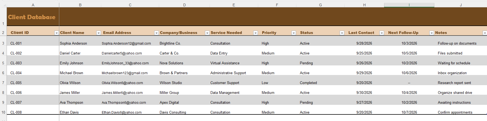
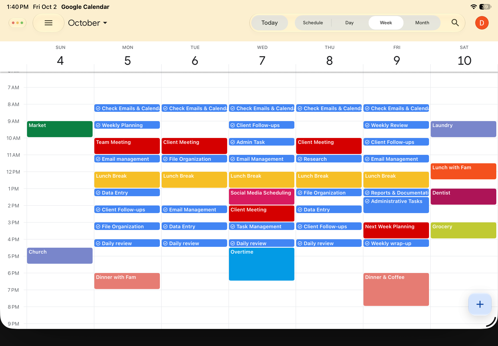
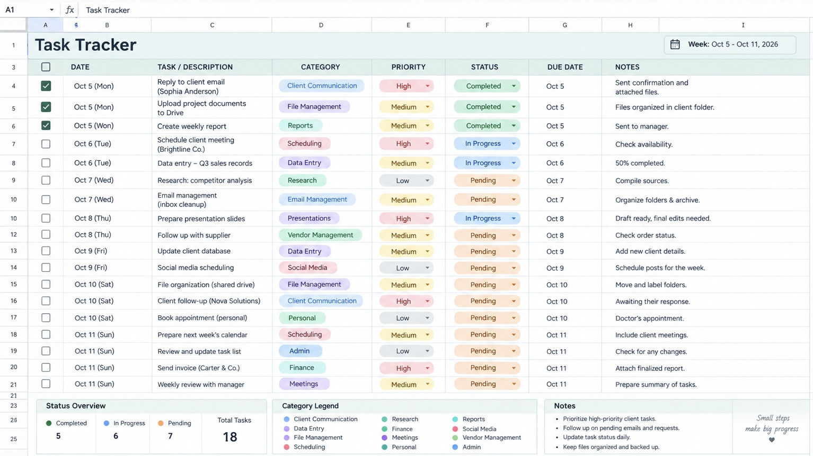
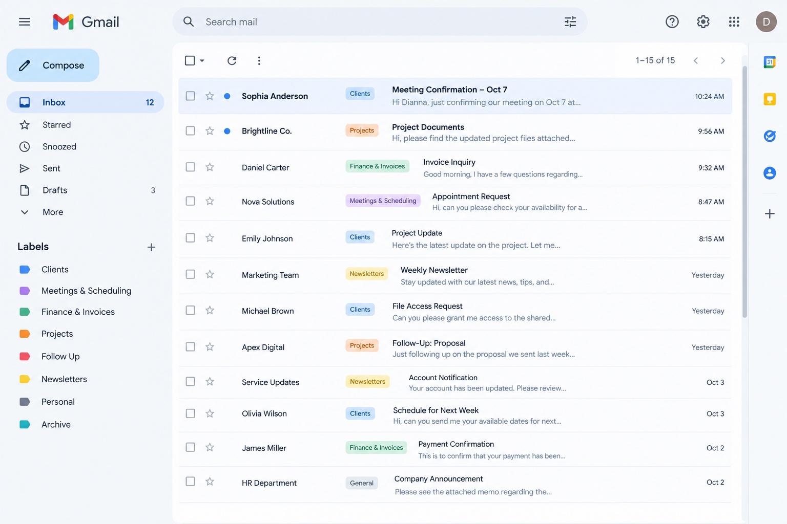
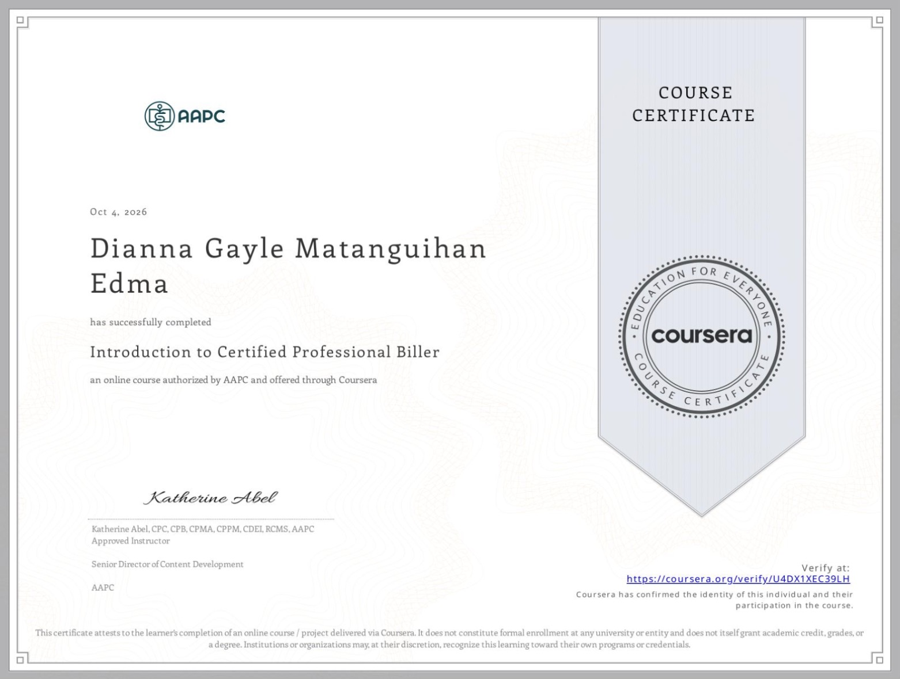
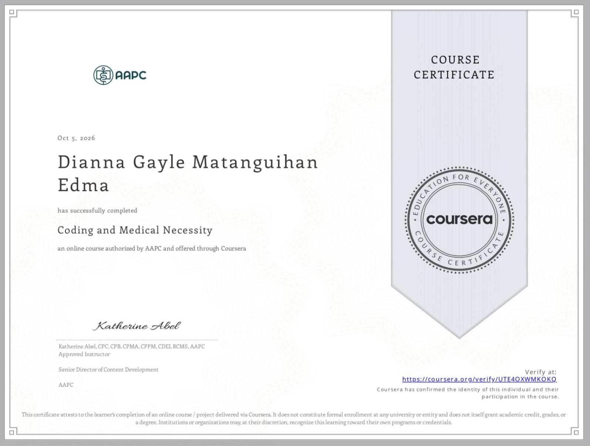

Data Entry
Accurate encoding, spreadsheet updates, data verification, and organized records.
VIRTUAL ASSISTANT • DATA ENTRY • ADMINISTRATIVE SUPPORT
Hi, I'm Dianna Gayle M. Edma — a Medical Laboratory Science graduate building a career in remote administrative, data, and customer support.
ABOUT ME
My background in Medical Laboratory Science has trained me to work carefully with information, documentation, records, procedures, confidentiality, and details that matter.
I'm now bringing those strengths into virtual assistance and administrative support, where I can help clients keep their tasks, files, schedules, and information organized.
HOW I CAN HELP
Accurate encoding, spreadsheet updates, data verification, and organized records.
Email and calendar support, task tracking, document preparation, and day-to-day admin help.
File organization, scheduling, documentation, research, and routine administrative tasks.
Professional written communication and responsive support for clients and customers.
Information gathering, data collection, comparison, and clear organization of findings.
Careful handling, organization, updating, and maintenance of digital records.
MY WORK
Selected mock projects demonstrating organization, data management, scheduling, and communication skills.

Organized a sample client database with contact details, services, priority, status, follow-ups, and notes.
View full image →
Created a structured weekly calendar covering client meetings, follow-ups, admin tasks, email management, and personal scheduling.
View full image →
Built a priority-based task tracker with categories, status, due dates, notes, and a weekly status overview.
View full image →
Created a structured inbox using labels for clients, projects, meetings, finance, newsletters, follow-ups, and archive management.
View full image →CERTIFICATIONS
Recent courses completed through Coursera and authorized by AAPC.

Completed an AAPC-authorized online course focused on foundational professional medical billing concepts.
View certificate →
Completed an AAPC-authorized online course focused on coding concepts and medical necessity.
View certificate →BACKGROUND
2026
Lyceum Northwestern University
2025
James L. Gordon Memorial Hospital, Olongapo · Mar–Sep 2025
2024
Region 1 Medical Center, Dagupan · Jan–Jul 2024
SKILLS & TOOLS
A LITTLE MORE ABOUT ME
RESUME
View the resume used for my virtual assistant and administrative applications.
View Resume ↗
GET IN TOUCH
For administrative, data entry, research, customer support, or virtual assistance needs, feel free to connect.